An AI assistant, or any client that speaks the Model Context Protocol, can use a running Minimal as a set of tools: it can deploy a Custom API, call it, read and change rows, build an app and read the audit trail. Every call is made as one identity, with that identity's roles, and every call is recorded.
This guide works through one install, the CRM dataset, from the first call to a finished app. Each step shows the request, the answer and, where data changes, the sample app in a browser before and after. The same steps ran unchanged on a Local install, on a LAN install and on a Hosted install. Only the address and, on LAN, the trusted certificate differ.
Before you start you need a running install (local, LAN or Hosted), its admin account and a shell on the machine that runs it.
sequenceDiagram participant C as MCP client participant G as Gateway participant M as Minimal C->>G: POST /minimal/mcp/rpc/v1 (token, session id) G->>M: the call M->>M: check token, roles, locks; record the turn M-->>C: the tool's answer as text
A call from client to Minimal. Who you are comes from the token alone; no header you send can override it.
An MCP token is minted by an admin, once, and shown once. On the Ready screen press Create a token, or from the install folder:
docker compose run --rm -T mcp-token
The command prints the MCP address, a token and a session id. The token is named for its use, carries the admin role and lasts seven days. Put the two values in a file only you can read:
LB-Access-Token: <token>
X-Session-Id: <session id>
Content-Type: application/json
Accept: application/json, text/event-stream
chmod 600 headers.txt
Keeping the headers in a file keeps the token out of your shell history and process list. The address is http://api.localhost/minimal/mcp/rpc/v1 on a Local install and https://api.<your-name>/minimal/mcp/rpc/v1 on LAN and Hosted. On LAN add --cacert pitstop-root.crt to every curl below, with the root certificate from the LAN guide.
List the tools:
curl -sS -H @headers.txt -X POST http://api.localhost/minimal/mcp/rpc/v1 \
-d '{"jsonrpc":"2.0","id":1,"method":"tools/list"}'
{"jsonrpc":"2.0","id":1,"result":{"ttlMs":60000,"cacheScope":"private","tools":[{"annotations":{"destructiveHint":false, ...
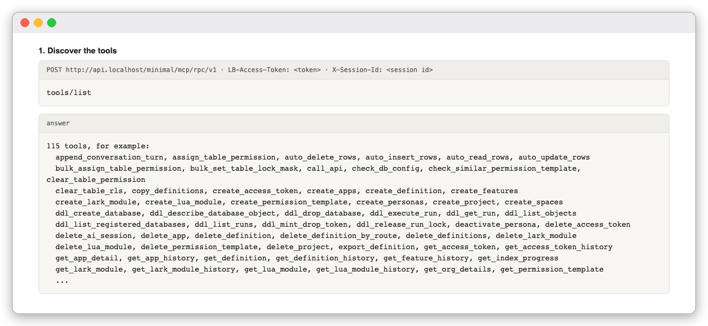
The answer lists 115 tools. Each has a description and an input schema; read both before you call it.
Call a tool with tools/call. The answer is always the tool's own reply as text:
curl -sS -H @headers.txt -X POST http://api.localhost/minimal/mcp/rpc/v1 \
-d '{"jsonrpc":"2.0","id":1,"method":"tools/call","params":{"name":"get_org_details","arguments":{}}}'
{"jsonrpc":"2.0","id":1,"result":{"content":[{"type":"text","text":"{\"abbreviation\":\"acme\", ...}"}]}}
In the rest of this guide a call is shown as the tool name and its arguments, and the answer as the text it returns.
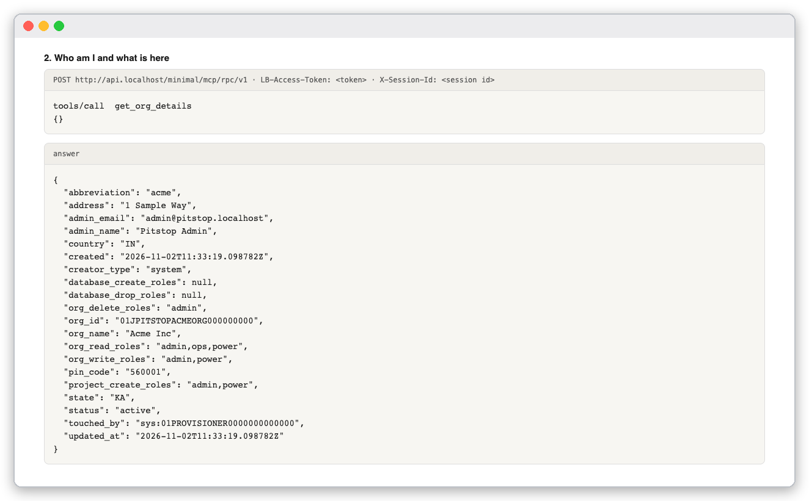
Your organisation, read with get_org_details.
A Custom API names your organisation, project, space and user. Read them from your own audit trail: every row carries them.
{"name":"read_my_audit_trail","arguments":{"page_size":4,"page_number":0}}
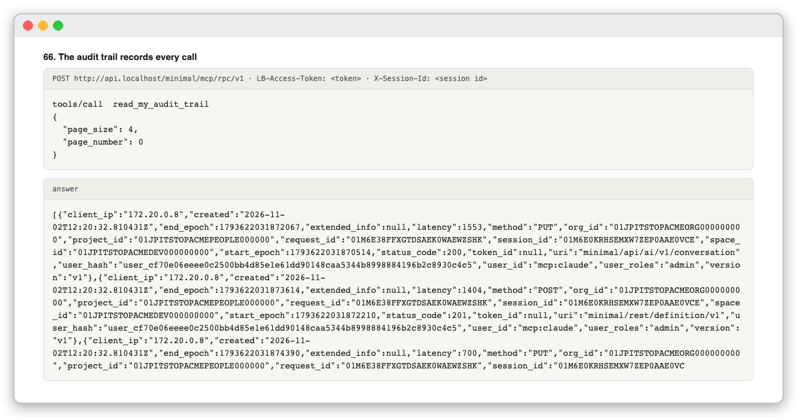
Each row names org_id, project_id, space_id and user_id, the call's URI and its status.
On the CRM install they are 01JPITSTOPACMEORG000000000, 01JPITSTOPACMEPEOPLE000000, 01JPITSTOPACMEDEV000000000 and mcp:claude (the token's name).
A Custom API is an endpoint you declare in one YAML document. It names the path, the roles that may call it, the database it talks to and the steps that run. Here is one that adds a deal.
identifiers:
org_id: 01JPITSTOPACMEORG000000000
project_id: 01JPITSTOPACMEPEOPLE000000
space_id: 01JPITSTOPACMEDEV000000000
user_id: mcp:claude
feature_id: crm
permission:
- admin
http:
method: POST
uri: crm/new-deal
version: "1"
input_type: json
output_type: json
logic:
- sql: insert into opportunity (id, account_id, name, stage_id, amount, currency, owner_email, close_on, created_at) values ((select coalesce(max(id), 0) + 1 from opportunity), ?:account_id::int, ?:name, ?:stage_id::int, ?:amount::numeric, 'EUR', ?:owner_email, now()::date + 30, now()) returning id, name, stage_id, amount
config:
rollback_version: "1"
coalesce: false
cache_result: false
database:
type: postgres
username: acme_core
password: <db-password>
name: acme
timeout_secs: 60
idle_timeout_secs: 60
max_open_connections: 5
max_idle_connections: 2
machine:
- host: pg-app
port: "5432"
mcp:
enabled: true
mcp_roles:
- admin
The password is the one the installer generated for the acme_core database role. It is a secret; read it into a file and keep it out of chat:
docker compose run --rm -T --no-deps --entrypoint cat provision /state/pg_app_core > db-password.txt
Send the document to create_definition. The endpoint is live when the call succeeds:
{"name":"create_definition","arguments":{"document":"<the YAML above, as one string>"}}
{"definition_id": "01M6E3CTZ8KAVWCWAAKBEMABGP", "final_url": "acme/crm/crm/new-deal"}
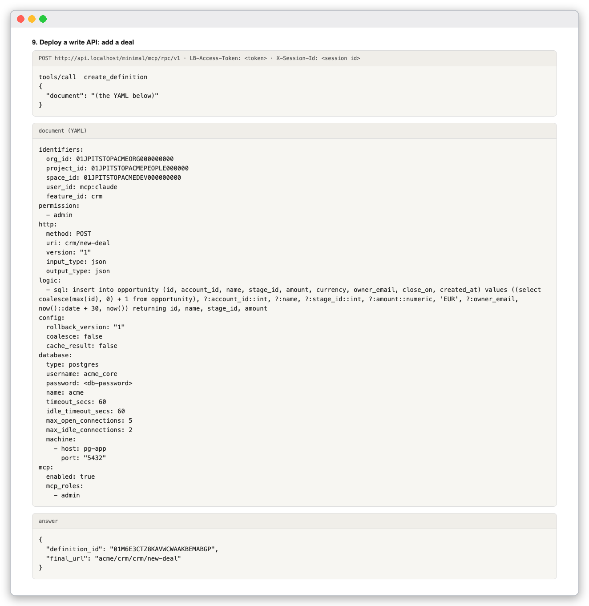
The document and the answer. The password is masked in the screenshot.
final_url is the stored path: your project's prefix is put in front of the uri you wrote. call_api takes it, a method and a version. For post the body is the endpoint's input.
{"name":"call_api","arguments":{"uri":"acme/crm/crm/new-deal","method":"post","version":"1","body":{"account_id":1,"name":"MCP demo deal","stage_id":1,"amount":"125000","owner_email":"demo@example.com"}}}
[{"amount":125000,"id":41,"name":"MCP demo deal","stage_id":1}]
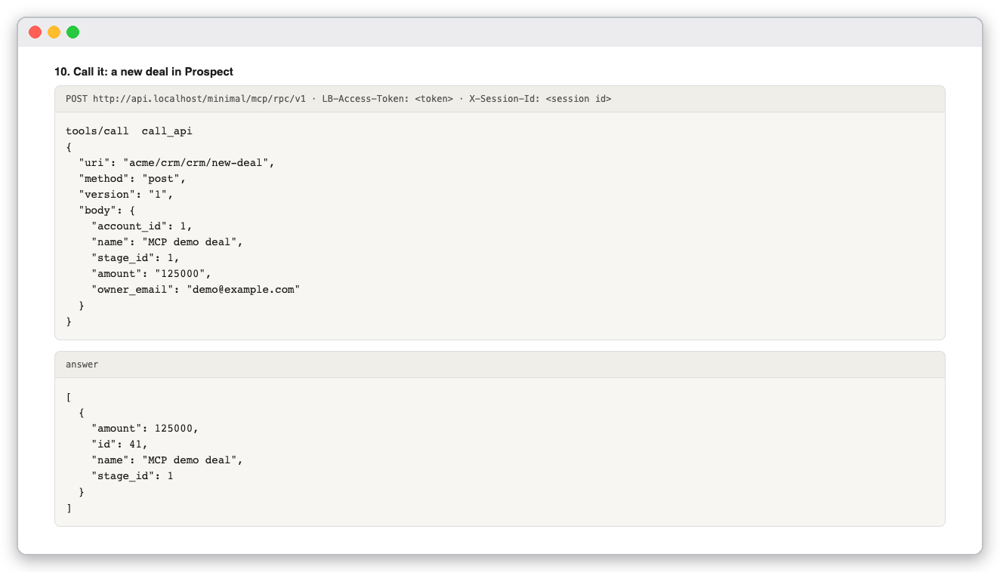
The endpoint ran and returned the row it inserted.
Open the sample app. Before the call it showed 40 deals; now it shows 41, and the new card is in Prospect.
Before: Pipeline. with 40 deals.
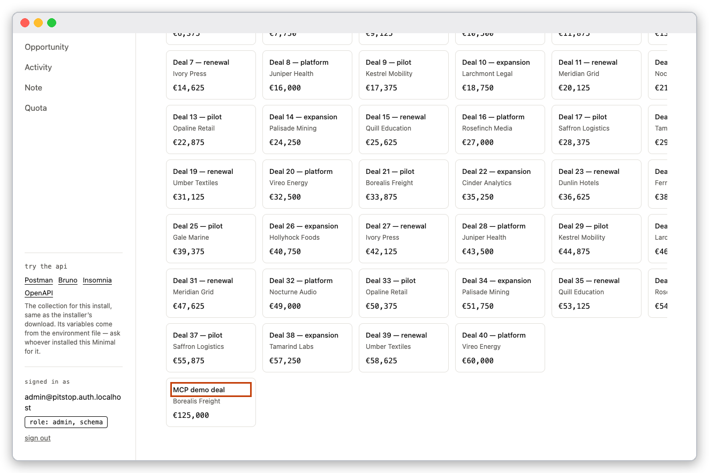
After: the new card, outlined in the screenshot, in the Prospect column.
The same call over the other two modes:
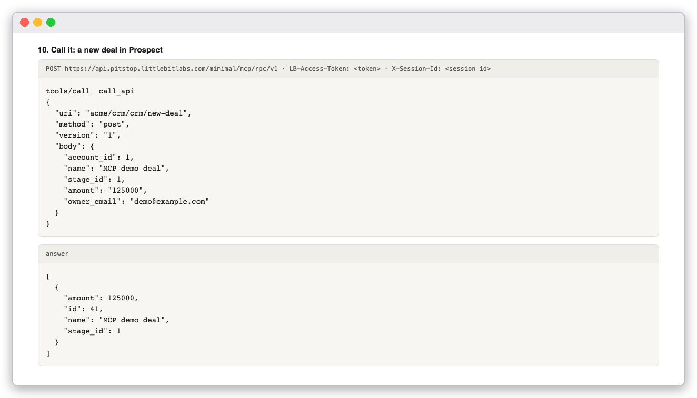
The call on the Hosted install, over HTTPS on the public domain.
The call on the LAN install, with the stack's root certificate trusted.
feature_id is stored as sent.call_api admits a caller only when mcp.enabled is true and one of the caller's roles is in mcp_roles.- sql: <one statement> or - lua: <name> followed by code:. ?:name takes the value of the input called name.Move the deal to another stage with a second endpoint. update_definition replaces an existing document in full, so build it from the one you sent:
{"name":"call_api","arguments":{"uri":"acme/crm/crm/move-deal","method":"post","version":"1","body":{"id":41,"stage_id":4}}}
[{"id":41,"name":"MCP demo deal","stage_id":4}]
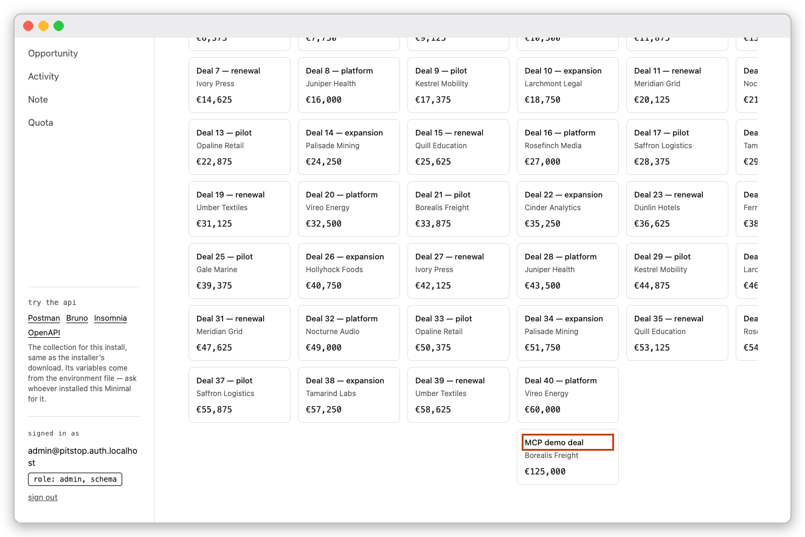
The app after the call: the card is in Negotiation.
Replace the document, then call it again:
{"name":"update_definition","arguments":{"document":"<the full YAML, with a changed query>"}}
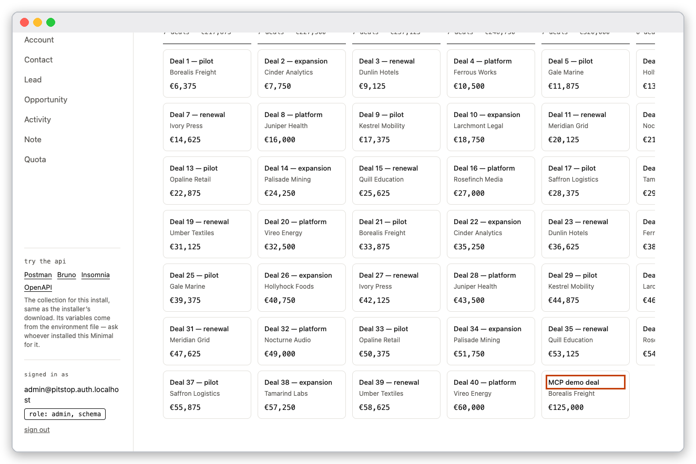
After the replaced endpoint ran with stage_id 5, the card is in Closed Won.
List what is deployed, filtered by tag if you like:
{"name":"list_definitions","arguments":{"page_size":20,"page_number":0}}
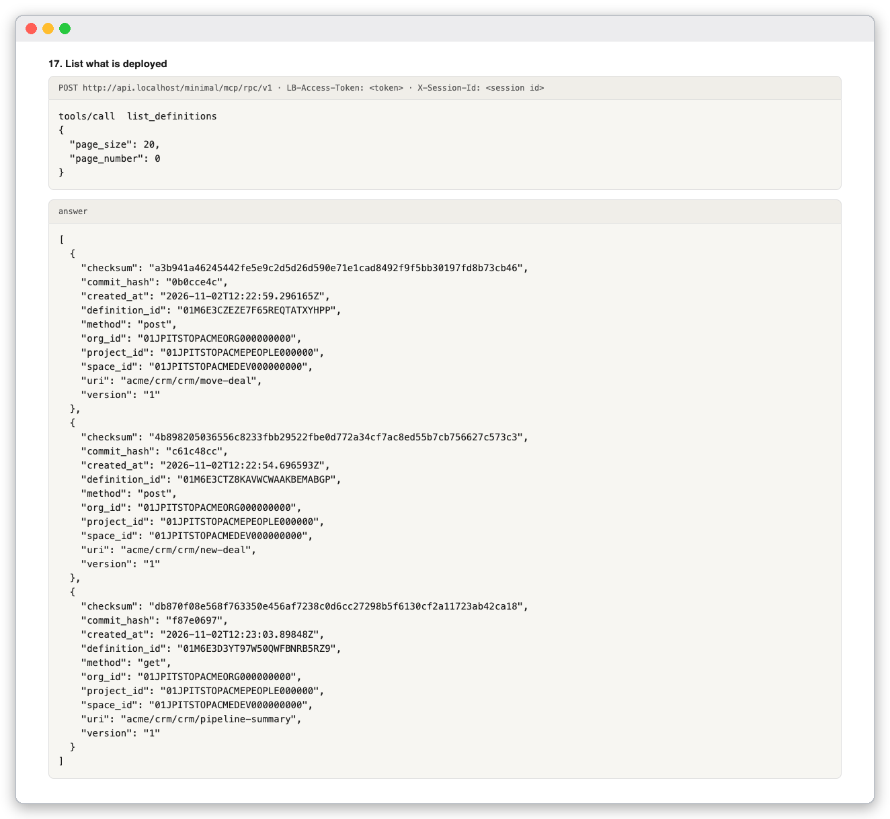
Each row gives the URI, method, version and definition id.
A logic step can be Lua. This endpoint sums a query's rows:
logic:
- sql: select s.name as stage, count(o.id) as deals, coalesce(sum(o.amount), 0) as total from stage s left join opportunity o on o.stage_id = s.id group by s.id, s.name order by s.id
omit: true
- lua: summarise
code: |
function min_main()
local deals, total = 0, 0
for i = 1, #step_0 do deals = deals + step_0[i].deals; total = total + step_0[i].total end
return { stages = #step_0, deals = deals, total = total }
end
omit: true keeps that step's rows out of the answer. Later steps read earlier ones as step_0, step_1, and so on. The function is min_main; it takes no arguments and returns a table.
{"deals":41,"stages":6,"total":1452500}
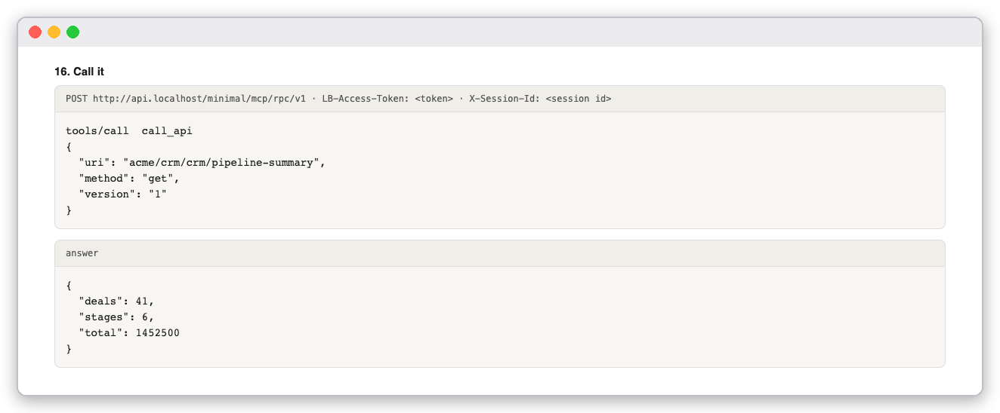
The Lua endpoint's answer.
| Call | Answer |
|---|---|
call_api on an endpoint that needs an input you left out |
the API answered 424 Failed Dependency: … could not execute URI |
call_api on an endpoint whose mcp.enabled is false, after patch_definition_attributes closed it |
403 Forbidden … insufficient permissions for mcp … |
create_definition on a path and method already used |
409 Conflict, definition already exists |
create_definition with a document that does not compile |
400, with the compiler's message, for example identifier "feature_id" not found |
The Auto API is the generic row interface: auto_read_rows, auto_insert_rows, auto_update_rows, auto_delete_rows. Over MCP it is locked on every table at install time, so an assistant reaches your data only through endpoints you deployed. A call is refused:
{"name":"auto_read_rows","arguments":{"type":"pg","schema":"acme","table":"opportunity","page_size":2,"page_number":0}}
the API answered 403 Forbidden: {"code":403,"status":"Forbidden","message":"insufficient permissions for this operation on this table, got [admin]"}
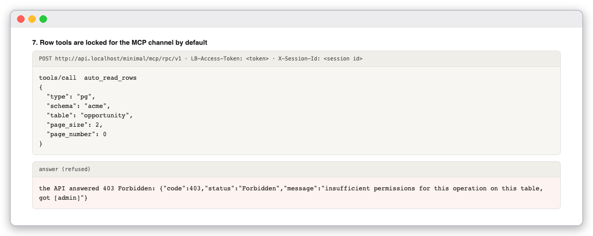
An admin MCP session is refused: the table's lock and its permission template both have to allow the call.
You can open one table on purpose. Two things gate a call: the table's lock mask, which says which operations are allowed on which channel, and the permission template, which says which roles may use them. Read the lock first:
{"name":"get_table_lock_status","arguments":{"db_type":"postgres","schema":"acme","table":"note"}}
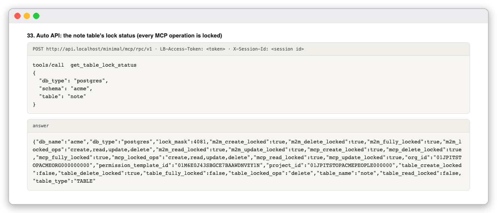
On the note table every mcp_*_locked flag is true.
Open the sample app's Note page for a baseline:
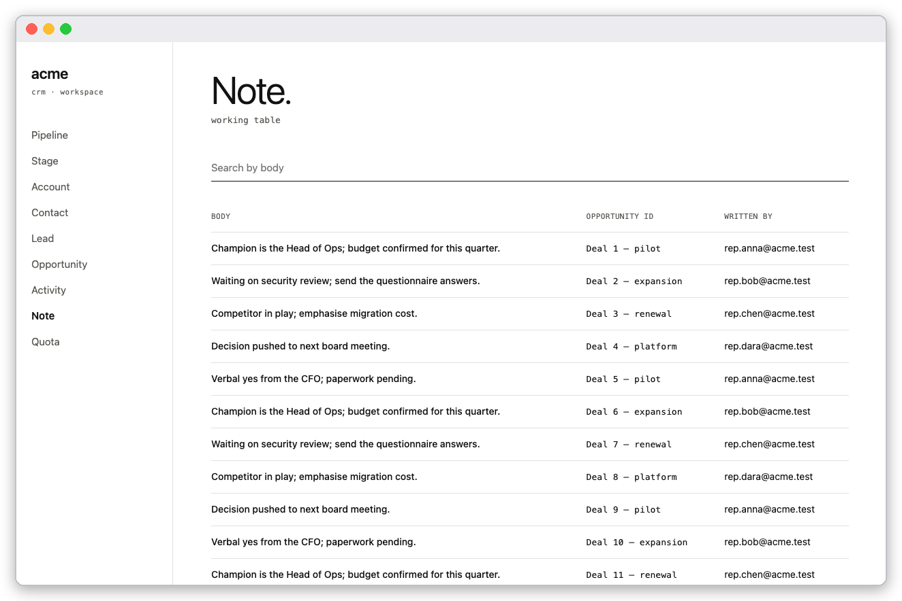
The Note page before any change.
Create a template that gives admin the four MCP row operations, assign it to the table, and unlock the four operations:
{"name":"create_permission_template","arguments":{"name":"guide-mcp-rows","description":"admin may use the row tools over MCP","auto_api_read_roles":"admin,editor,ops,power,viewer","auto_api_create_roles":"admin,editor","auto_api_update_roles":"admin,editor","auto_api_delete_roles":"admin","mcp_create_roles":"admin","mcp_read_roles":"admin","mcp_update_roles":"admin","mcp_delete_roles":"admin"}}
{"name":"assign_table_permission","arguments":{"db_type":"postgres","schema":"acme","table":"note","template_id":"<the template_id from the answer>"}}
{"name":"set_table_lock_mask","arguments":{"db_type":"postgres","schema":"acme","table":"note","mcp_create_locked":false,"mcp_read_locked":false,"mcp_update_locked":false,"mcp_delete_locked":false}}
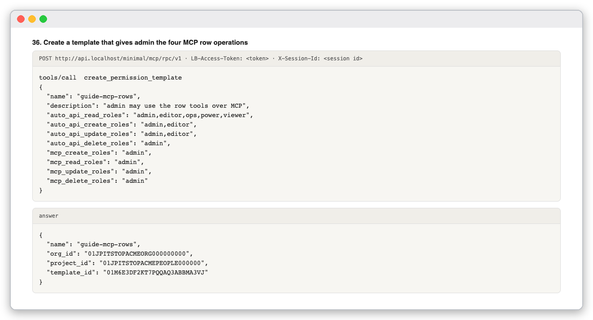
The new template. The unlock is the call below it in the same run.
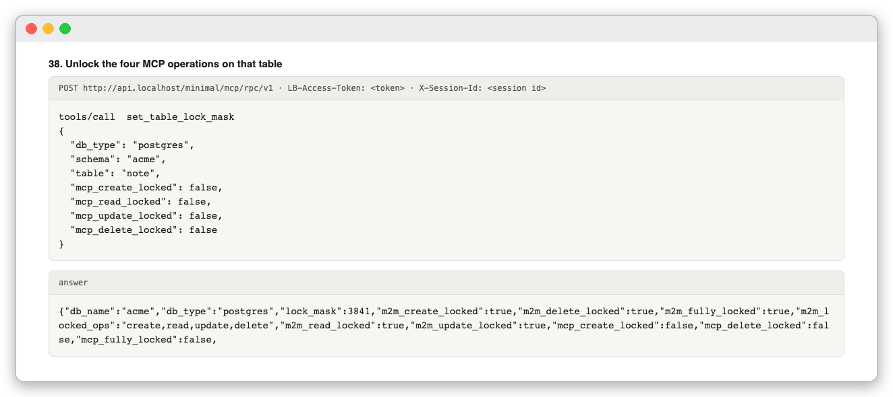
The lock status after the unlock.
Now the row tools work. Read, insert, update:
{"name":"auto_read_rows","arguments":{"type":"pg","schema":"acme","table":"note","page_size":3,"page_number":0}}
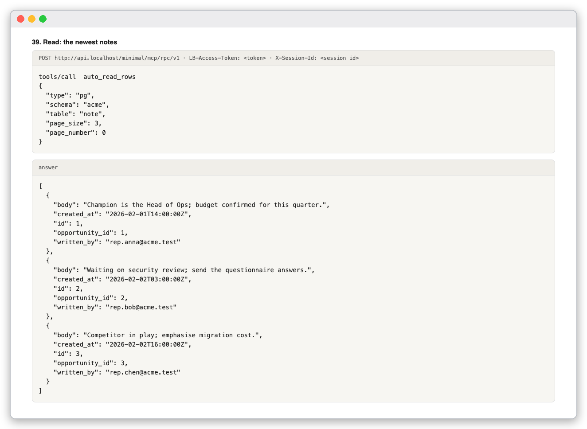
The first three notes.
{"name":"auto_insert_rows","arguments":{"type":"pg","schema":"acme","table":"note","rows":[{"id":1000,"opportunity_id":1,"body":"Written by an agent through MCP","written_by":"agent@example.com","created_at":"2026-11-02 12:00:00"}]}}
{"rows_affected": 1}
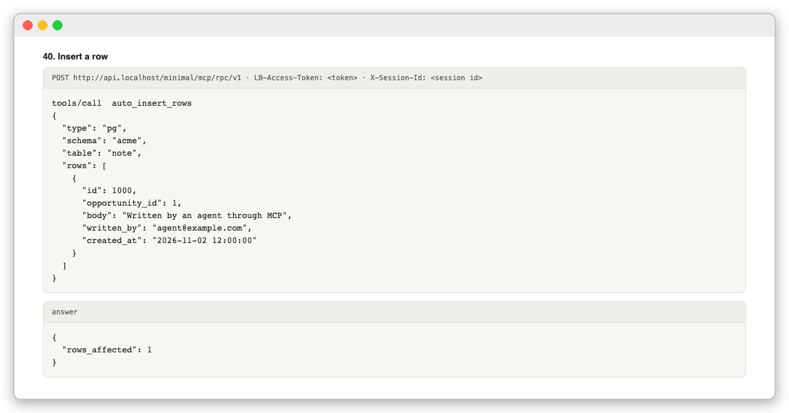
One row inserted.
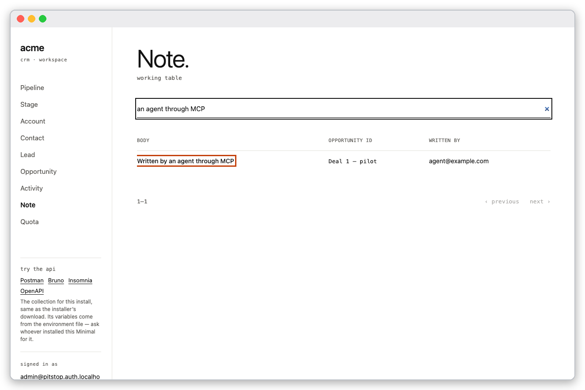
The Note page, searched for the new text, shows the row the assistant wrote.
set is a list of column.value pairs and query says which rows: a key is a column and its value is operator.operand, here eq.1000.
{"name":"auto_update_rows","arguments":{"type":"pg","schema":"acme","table":"note","set":"body.Edited by an agent through MCP","query":{"id":"eq.1000"}}}
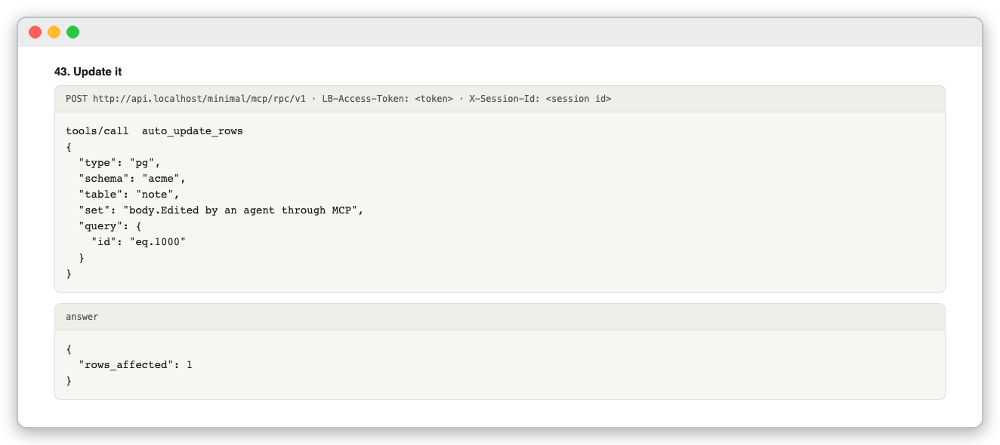
One row updated.
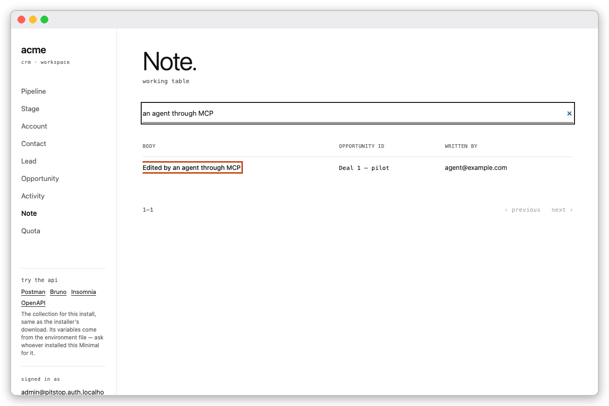
The edited text in the app.
A delete is refused here, and not by the MCP lock. The note table is locked against deletes for every caller, over every channel:
the API answered 403 Forbidden: {"code":403,"status":"Forbidden","message":"insufficient permissions for this operation on this table, got [admin]"}
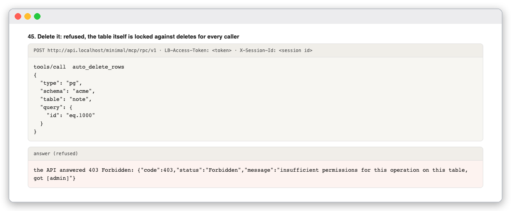
The table's own delete lock.
That lock is the owner's decision. Lift it for the demonstration, delete, and see the row go:
{"name":"set_table_lock_mask","arguments":{"db_type":"postgres","schema":"acme","table":"note","table_delete_locked":false}}
{"name":"auto_delete_rows","arguments":{"type":"pg","schema":"acme","table":"note","query":{"id":"eq.1000"}}}
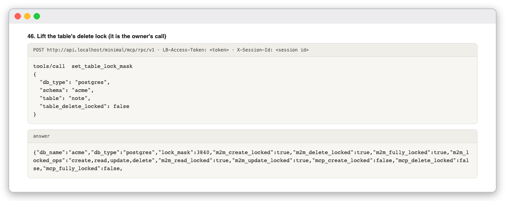
The lock status with deletes allowed.
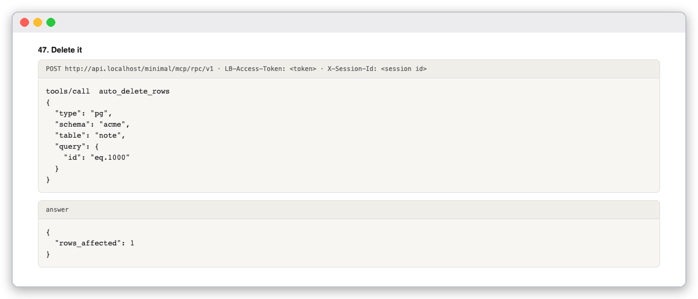
One row deleted.

The Note page is back to its original rows.
A delete without a filter is refused, so a whole table cannot be emptied by accident:
the API answered 417 Expectation Failed: {"code":417,"status":"Expectation Failed","message":"unable to perform delete","details":"a valid SQL statement could not be formed reason: blanket delete detected, rejecting request"}
Restore every lock flag to its first value, assign the original template back and delete yours. The first get_table_lock_status is your reference: afterwards its lock_mask and permission_template_id must match.
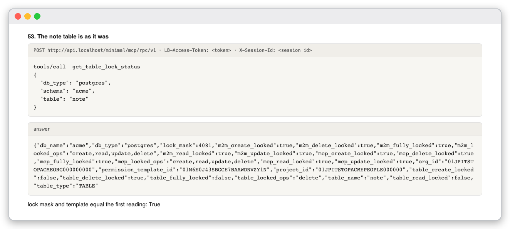
After the restore the lock mask and template equal the first reading.
An app in Minimal is a catalogue entry. Its app_info is free-form, base64-encoded, and is handed back as HTML. An assistant can therefore read live data through a Custom API, write a page and store it.
crm/stage-summary: deals and value per stage) and call it.is_public lets render_app serve it to any caller who can read the project.{"name":"create_apps","arguments":{"apps":[{"app_id":"01JGUIDEAPP0000000000PIPE1","name":"Pipeline by stage","kind":"dashboard","description":"Deals and value per stage, built over MCP","creator_type":"human","is_public":true,"shared":true,"app_info":"<the page, base64-encoded>"}]}}
{"rows_affected": 1}
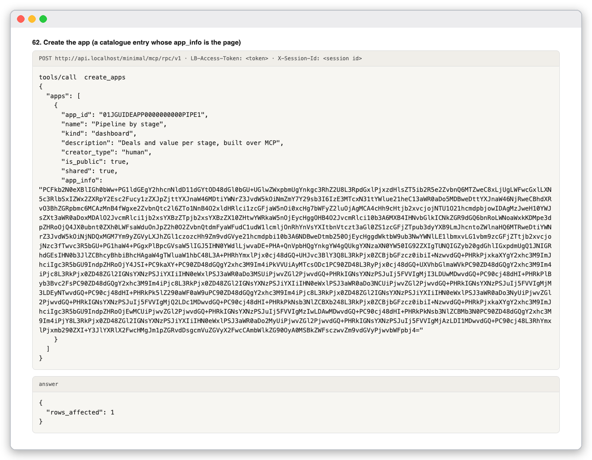
The app registered. The answer is a count; send your own app_id if you need it back.
{"name":"render_app","arguments":{"app_id":"01JGUIDEAPP0000000000PIPE1"}}
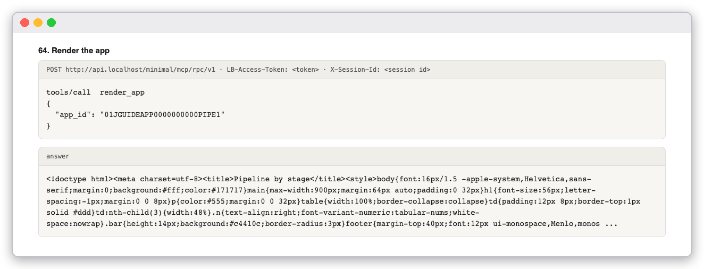
The stored page, returned as text.

The page the assistant built from live data: deals and value per stage.
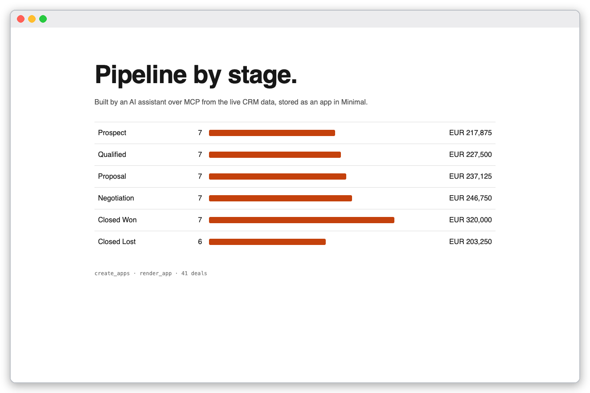
The same steps on the Hosted install.
create_access_token mints a token for another client. Its roles must be a subset of yours, and key_type is four characters in create, read, update, delete order: a letter where the operation is allowed and - where it is not.
{"name":"create_access_token","arguments":{"name":"guide-reader","roles":"admin","key_type":"-r--","token_type":"mcp","expires_in_days":1}}
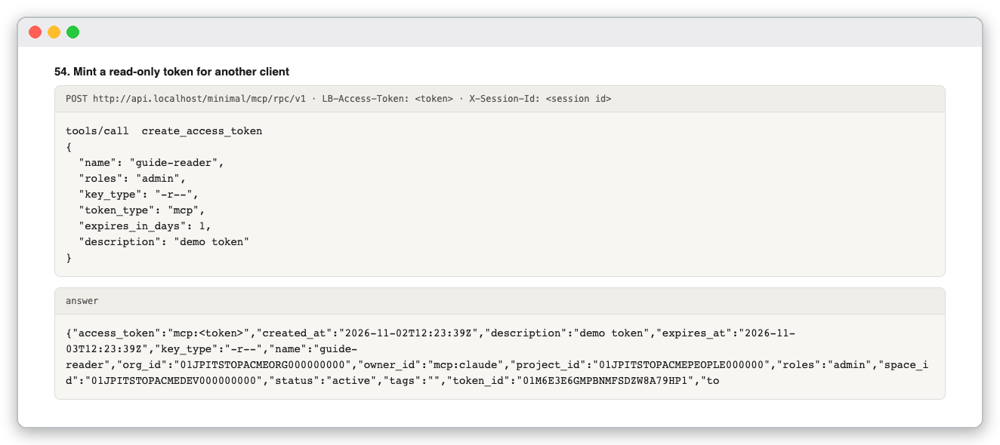
The answer carries the new token once; it is masked in the screenshot. list_access_tokens and delete_access_token list and revoke.
Every call you make is recorded to your session, and read_my_audit_trail shows the trail, as in section 2. Deleting what you deployed is part of the loop: delete_definition, delete_app and delete_lua_module remove their objects.
tools/list answers with 115 tools.create_definition on a path that exists answers 409 Conflict; a document without feature_id answers 400.crm/new-deal call the app shows 41 deals; after you delete the row it is 40 again.auto_read_rows on a locked table is refused with 403; after you unlock it and assign a template that names your role, it answers with rows.get_table_lock_status returns the same lock_mask and template as at the start.render_app returns HTML for an app whose is_public is true.docker compose down -v erases them with the rest.delete_access_token, or with docker compose run --rm -T mcp-token --revoke <token id>.mcp: false in pitstop.yaml, or PITSTOP_MCP=false, nothing answers and no token works.